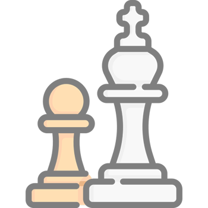
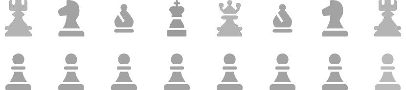
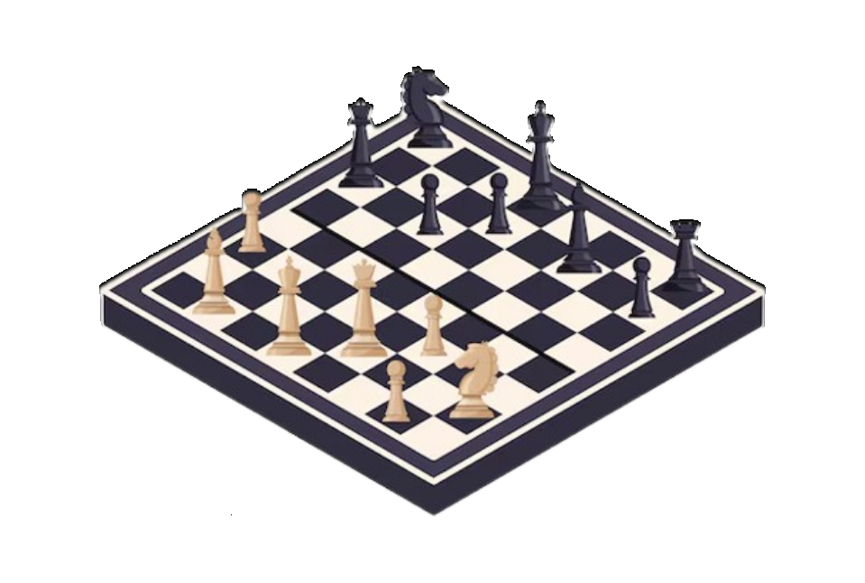

O tabuleiro muda menos do
que quem aprende a olhar
para ele

Xadrez é um jogo de estratégia baseado em
decisões, antecipação e análise, onde cada movimento tem uma
consequência direta.
O xadrez é jogado em um tabuleiro
com 64 casas, divididas entre claras e escuras, podendo ser jogado de
forma presencial ou online.

No xadrez, nem sempre a melhor jogada é a mais
óbvia, e pensar além do imediato faz diferença. Cada movimento tem uma
intenção, e às vezes perder
uma peça faz parte do plano.

Errar faz parte do xadrez, e cada partida é
uma chance de evoluir. Com o tempo, seu jeito de jogar começa a se revelar.
Descubra qual abertura combina com você e estime
seu nível agora.